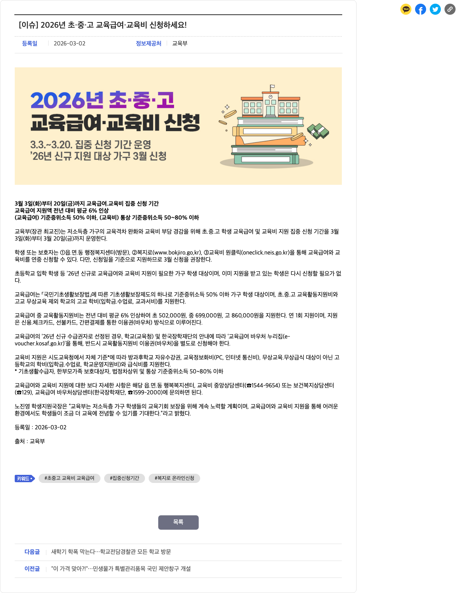
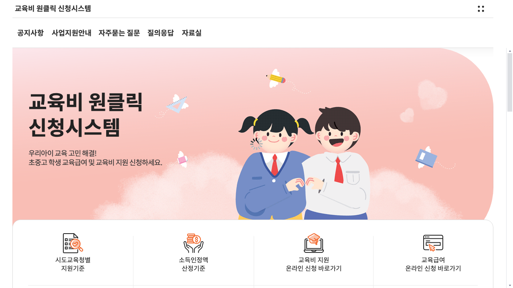

새학기 시작할 때 은근히 놓치기 쉬운 게 교육급여와 교육비 지원입니다. 이름이 비슷해서 헷갈리지만, 지원 대상과 항목이 다르고 신청 경로도 다릅니다.
아래 내용은 2026년 3월 2일 교육부 보도자료(복지로 게시)와 현재 공개된 공식 신청 페이지를 다시 확인해 정리했습니다. 날짜, 금액, 자격은 매년 바뀔 수 있으니 신청 전 최신 공지를 한 번 더 확인하는 편이 안전합니다.

1. 언제 신청하나요?
2026년 3월 2일 교육부 보도자료에 따르면 교육급여·교육비 집중 신청 기간은 3월 3일(화)부터 3월 20일(금)까지입니다.
연중 신청 자체는 가능하지만, 신청일 기준으로 지원이 적용될 수 있어서 보통은 3월 안에 신청하는 것이 유리합니다. 학기 초부터 지원을 받으려면 집중 신청 기간을 놓치지 않는 게 중요합니다.
2. 누가 다시 신청해야 하나요?
2026년 3월 2일자 보도자료 기준으로 이미 지원을 받고 있는 학생은 다시 신청할 필요가 없습니다. 다만 아래 경우라면 꼭 다시 확인해보는 편이 좋습니다.
- 2026년에 처음 지원이 필요한 가구
- 초등학교 입학 등 신규 학생이 있는 경우
- 작년에 신청하지 않았던 경우
- 가구 상황이나 소득 상황이 달라진 경우
- 지역이나 학교가 바뀐 경우
즉, 처음 신청하는 가구와 상황이 바뀐 가구는 반드시 확인 대상이라고 보면 됩니다.
3. 교육급여와 교육비 지원은 뭐가 다를까요?
헷갈리기 쉬운 부분인데, 공식 안내 기준으로 보면 이렇게 이해하면 쉽습니다.
교육급여
- 기준중위소득 50% 이하 가구 학생 대상
- 초중고 교육활동지원비 지원
- 무상교육 제외 학교 재학 시 고교 학비도 지원 가능
- 바우처 방식 신청이 별도로 필요할 수 있음
2026년 3월 2일 교육부 보도자료 기준 교육활동지원비는 초등학생 502,000원, 중학생 699,000원, 고등학생 860,000원입니다. 전년 대비 평균 6% 인상된 금액이므로, 신청 전 다시 확인하는 편이 좋습니다.
교육비 지원
- 시도교육청 기준에 따라 지원
- 방과후학교 자유수강권
- 인터넷 통신비
- PC 등 교육정보화 지원
- 무상교육, 무상급식 제외 학교의 학비·급식비 등 지원 가능
즉, 교육급여는 기초생활보장제도 성격, 교육비 지원은 교육청 운영 항목 지원으로 이해하면 훨씬 정리가 쉽습니다.
4. 어디서 신청하나요?
공식 안내 기준 신청 경로는 아래처럼 정리됩니다.
- 읍면동 행정복지센터 방문 신청
- 복지로 온라인 신청
- 교육비 원클릭 온라인 신청
온라인으로 처리하려는 분들은 아래 두 곳을 먼저 확인하면 됩니다.
- 복지로 보도자료: 2026년 초·중·고 교육급여·교육비 신청 안내
- 교육비 원클릭: oneclick.neis.go.kr
- 교육급여 바우처: e-voucher.kosaf.go.kr
특히 교육급여 신규 수급권자로 선정된 경우에는 교육활동지원비 바우처를 별도로 신청해야 할 수 있으니, 선정 이후 안내도 꼭 확인해야 합니다.
5. 신청 전에 준비하면 좋은 체크리스트
- 학생 학년과 학교급
- 보호자 정보
- 가구원 변동 여부
- 기존 수급 여부
- 온라인 신청 가능 여부
- 추가 제출 서류 필요 여부
6. 교육비 원클릭 화면도 같이 확인해두면 좋습니다
실제 온라인 신청 동선은 교육비 원클릭 시스템에서 확인할 수 있습니다. 글만 보고 끝내기보다 신청 경로 화면을 한 번 직접 열어보는 게 훨씬 덜 헷갈립니다.

7. 한 번에 요약하면
- 집중 신청 기간: 2026.03.03 ~ 2026.03.20
- 이미 받고 있는 학생은 보통 재신청 불필요
- 신규 신청 가구는 3월 안에 확인하는 게 유리
- 교육급여와 교육비 지원은 성격과 지원 항목이 다름
- 교육급여 신규 선정자는 바우처 추가 신청 여부 확인 필요
- 신청 경로는 행정복지센터, 복지로, 교육비 원클릭
자주 묻는 질문
Q. 교육급여와 교육비는 같은 제도인가요?
아닙니다. 비슷해 보이지만 지원 기준과 항목이 다릅니다.
Q. 온라인 신청은 어디서 하나요?
복지로 보도자료와 교육비 원클릭, 교육급여 바우처에서 확인할 수 있습니다.
공식 링크
교육급여와 교육비 지원은 매년 일정과 금액, 대상이 바뀔 수 있습니다. 신청 직전에는 위 공식 페이지의 최신 공지와 안내문을 다시 확인하세요.